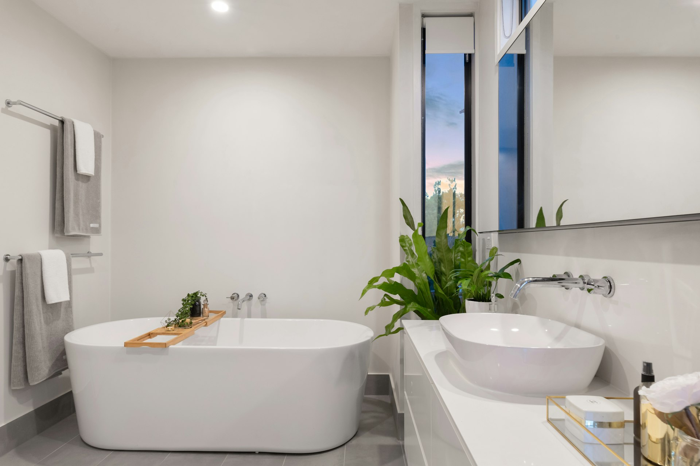
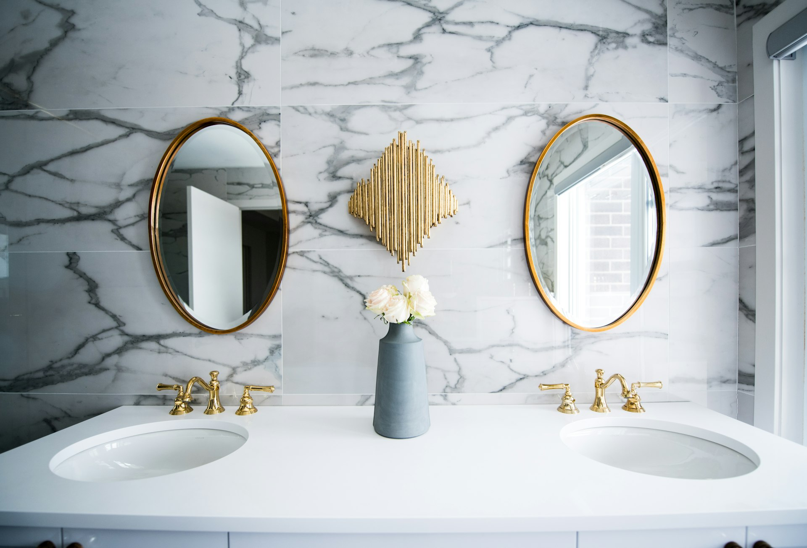
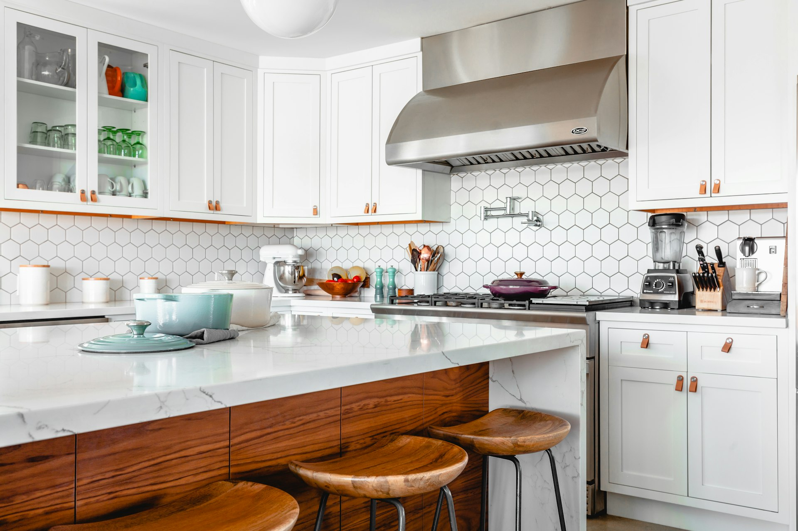

Ванна или душ: какой выбор действительно обеспечит комфорт в вашем доме? Сегодня мы проливаем свет на семь самых распространенных мифов, которые могут затмить ваше решение.
Выбор между душем и ванной часто делается на основе личных предпочтений, размера ванной комнаты и образа жизни семьи. Давайте разберем 7 распространенных мифов, которые могут помешать вам сделать правильный выбор.
❌ Миф 1: Ванна всегда обеспечивает лучшую релаксацию
✅ Реальность:
Действительно, ванна дает возможность для глубокого расслабления, но это больше подходит тем, кто предпочитает размеренный образ жизни. Для полноценного погружения среднего человека требуется ванна размером минимум 170 × 70 см. В ванне размером 120 × 70 см можно только сидеть.

❌ Миф 2: Душ — только для спешащих людей
✅ Реальность:
Душ — это практичное решение для активных людей, но это не означает отсутствие комфорта; это выбор образа жизни. Более того, душ экономит воду по сравнению с ванной, особенно при использовании водосберегающих леек.
❌ Миф 3: Ванна экономит место
✅ Реальность:
Ванна занимает большую часть санузла; экономию места обеспечивает именно душевая кабина или walk-in зона. То есть для маленькой ванной комнаты, размером около 4 кв. метров, более предпочтительно установить душ.

❌ Миф 4: Ванна менее безопасна
✅ Реальность:
Как ванна, так и душ могут представлять опасность, если не соблюдать основные правила безопасности. Но ванна имеет свои преимущества, такие как возможность купания детей и домашних животных, а также выполнение бытовых задач. К тому же, в ванне можно проводить spa-процедуры с гидромассажем.
💡 Практический совет
При выборе между душем и ванной учитывайте не только площадь помещения, но и состав семьи. Если у вас есть маленькие дети или домашние животные — ванна будет более практичным решением. Для одного-двух взрослых в небольшом пространстве — душевая кабина сэкономит место и воду.
🔍 Дополнительные мифы
❌ Миф 5: Душ всегда дешевле в установке
✅ Реальность:
Стоимость зависит от выбранного оборудования. Премиальная душевая система с тропическим душем и гидромассажем может стоить дороже стандартной акриловой ванны. А walk-in душевая с стеклянными перегородками на заказ обойдется дороже готовой душевой кабины.
❌ Миф 6: В ванной невозможно экономить воду
✅ Реальность:
Если вы принимаете ванну раз в неделю для релаксации, а в остальные дни — быстрый душ, расход воды будет оптимальным. Проблема возникает только при ежедневном наполнении ванны. Средний расход: душ 5-10 минут = 50-100 литров, полная ванна = 150-200 литров.
❌ Миф 7: Ванну нельзя установить в маленькой комнате
✅ Реальность:
Существуют компактные ванны длиной 120-140 см и сидячие ванны глубиной 60-70 см. Да, полноценно лечь не получится, но для сидячих spa-процедур места хватит. Угловые ванны также экономят пространство и вписываются даже в хрущевки.

✅ Выводы
Как видите, каждый выбор имеет свои плюсы и минусы, и важно делать его, исходя из своих реальных потребностей, а не гонясь за модными трендами.
Основные критерии выбора:
- Площадь ванной комнаты (менее 4 м² — душ предпочтительнее)
- Состав семьи (дети, пожилые, питомцы — ванна практичнее)
- Образ жизни (активный — душ, размеренный — ванна)
- Бюджет (учитывайте не только покупку, но и эксплуатацию)
- Расход воды (душ экономичнее при ежедневном использовании)
Надеемся, что наш разбор помог вам немного прояснить ситуацию. Удачи в выборе!